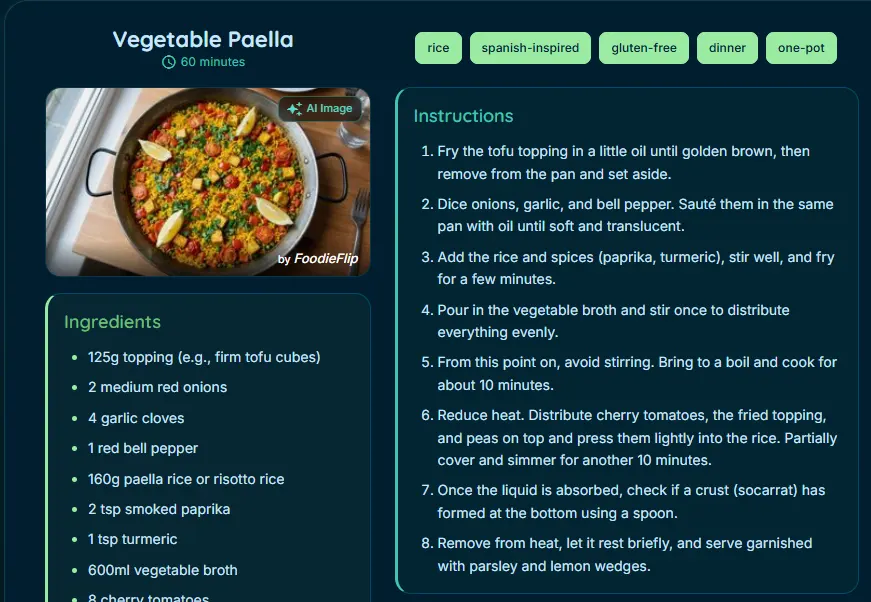

Projects
Current Project

Foodie Flip
Angular MaterialTypeScriptExpressNeon PostgresREST APIs
Web application that generates recipe recommendations depending on time and ingredient preferences. Currently in early development.
I'm a passionate learning developer focused on creating intuitive digital experiences. With a background in both business studies and great interest in modern web technologies, I bridge the gap between complex problems and elegant solutions.
I enjoy exploring new frameworks and techniques to stay on top of modern frontend development standards. My approach is user-centric, ensuring every line of code serves a purpose.
My technical toolkit is constantly evolving while discovering all of the possibilities of web development. Find technologies I use within the tags of my projects below.
More: RESTful APIs, Firebase, Git, Power Automate, RxJS, Bootstrap Studio

Web application that generates recipe recommendations depending on time and ingredient preferences. Currently in early development.